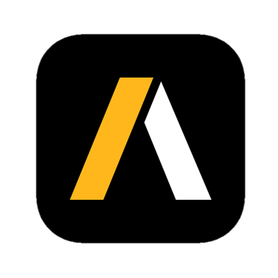
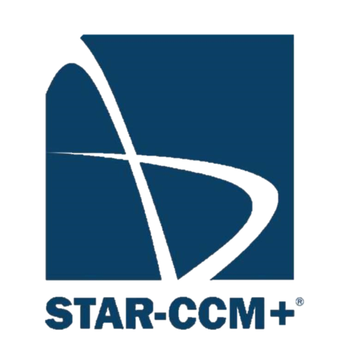

Hey, this is



Yinan Wang
I am a designer and researcher at the intersection of future nuclear system design, naval architecture and mechanical engineering. I am passionate about exploring ways to develp innovative future nuclear reactor designs, finding out applications on civil and naval marine propulsion systems and autonomous underwater vehicles, particularly SMRs and Hybrid Fission-Fusion reactors.
Projects
Nuclear Economics Project
- WITH Chinese Academy of Sciences
CAE drawing
FEA
CFD
Nuclear reactor systems
Space and marine Propulsion
Materials
Structual Engineering
ANSYS
Fluid Mechanics
Production Engineering
MHD
Nuclear Plasma Gun Engineering Design Project
- WITH Chinese Academy of Sciences
- Awarded as the ONLY Clean Energy Project in the 'Chinese National Major Science and Technology Infrastructure' to achieve 'Carbon Neutral';
- Patent application in progress
- PJMIF was first proposed by Prof. Thio in 1980's while at Westinghouse Research Labs in Pittsburgh, US.
As a group of nuclear energy researchers, we are undertaking the development of the most advanced coaxial plasma gun [Electromagnetic launchers] design of the next-generation nuclear fusion reactors.
CAE drawing
FEA
CFD
Nuclear reactor systems
Space and marine Propulsion
Materials
Structual Engineering
ANSYS
Fluid Mechanics
Production Engineering
MHD
Offshore Patrol Vessel (OPV) Design Project
WITH UCL NAME (Naval Architecture and Marine Engineering) Research Group
- Created 3D ship hull design including deck arrangement and Propulsion systems (engine room configuration)
-Conducted CFD analysis of the surface ship model overcoming waves and winds using Maxsurf.
Naval Architecture
Structural Engineering
Marine proulsion
Turbomachinery / Fluid mechanics
Computational design
Centrifugal Pump Rotor Impeller Design Project
WITH Pratt & Whitney Canada (PWC)
This project is aiming to explore practical applications of fluid pinciples to rotordynamic designs.
Centrifugal Pump
Turbomachinery
Simulation
3D printing
Prototyping
CFD
Blade performance
Cavitation
Developing new standards for calibrating coking propensity for future fuels
WITH UCL LEET (Low Emissions Energy Technologies) Research Group
This project was awared the 'Undergraduate Vacation Bursary' for the College UROS Scheme of the Year 2017.
The aim of this project is to develop new methodologies to investigate the coking tendency of fuels and further our understanding of fluid coking and thermal cracking mechanisms in combustion engines.
Coking propensity
Imaging technique
Thermodynamics
Spray pattern
Fuel-air mixture
Chamber materials
Fuel-wall impingement
Investigations on the structual design of a high-end commuting bicycle frame
- Designed and optimized the frame for a high-end commuting bicycle
- Carried out material selection and design sustainability analysis for the bicycle frame, using CES Edupack.
FEA
Material Selection
Ergonomics
Engineering Design
Sub and Surface Sea tests using the UCL Towing Tank
WITH UCL NAME Research Group
This project was awared the 'Undergraduate Vacation Bursary' for the College UROS Scheme of the Year 2018.
The aim of this project is to develop state-of-the-art parametric identification methodologies to investigate the static and dynamic performance of the UCL ROV (Remotely Operated Vehicle) and the Vessel Model of Series 60 Hullform (Surface Ship).
Sea tests
Seakeeping
Manoeuvring
ROV Design
Towing Tank
Investigations on edge effects using Finite Element Method
Discussed the influence of dimensions upon the stress concentration factor in a plate with two mid-side U-notches, developed in ANSYS Mechanical APDL, under axial loading conditions.
FEA
Stress Concentration
structual stability
Computational Design
Investigations on practical design optimizations of UCL Racing Car accessories
WITH UCL Racing Team and Shell
Carbon fibre
Engineering design
FEA
Stuctural analysis
CFD
Investigations of trajectory generation and control of UUVs
PID control
Path planning
Matlab
Labview
Investigations on hydrodynamic flow behaviors around a blunt body
CFD
Computational analysis
Fluid mechanics
Hydrodynamics
STAR-CCM+
Combustion characteristics of a spark ignition engine operated with renewable fuel blends
Renewable Fuel
Thermal Efficiency
Achievements
Patent Application (CNIPA)
Unidirectional Gas Valve Design for STG1 Plasma Gun
In progress
Patent Application (WIPO)
Unidirectional Gas Valve Design for STG1 Plasma Gun
Pending
Research Awards
Undergraduate Vacation Bursary for the College UROS Scheme
University College London
Awarded in 2018
Research Awards
Undergraduate Vacation Bursary for the College UROS Scheme
University College London
Awarded in 2017